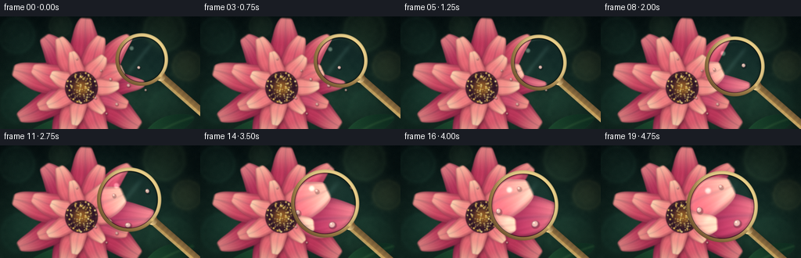
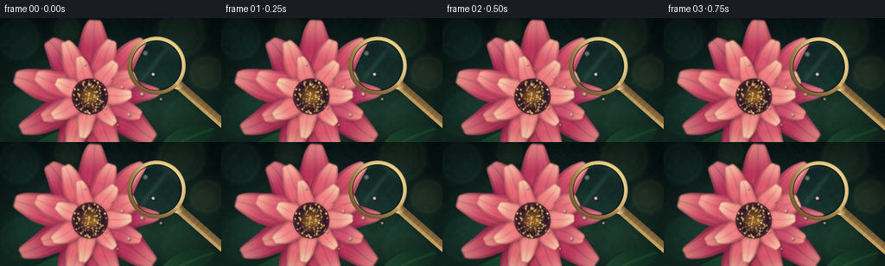

CODING AGENTS AS PIXEL WORLD MODELS
traex/DeepSeek-V4.1-Flash · phygen_070
点击播放 · 原生 RGB 像素
逐轮保存的候选
回放视频、检查图与代码变化。
每份候选均可单独播放。实际图片检查记录在下方工具轨迹中。
候选 01播放与检查图
点击播放 · 原生 RGB 像素


展开代码变化
--- 上一保存版本
+++ 本次保存版本
@@ -0,0 +1,435 @@
+from pathlib import Path
+
+import numpy as np
+from PIL import Image, ImageFilter
+
+from artifact_io import save
+
+
+ROOT = Path(__file__).resolve().parent
+OUT_W, OUT_H = 256, 144
+SS = 3
+W, H = OUT_W * SS, OUT_H * SS
+N_FRAMES = 20
+FPS = 4.0
+
+
+def rgb(hex_value):
+ hex_value = hex_value.lstrip("#")
+ return np.array([int(hex_value[i : i + 2], 16) for i in (0, 2, 4)], dtype=np.float32)
+
+
+def mix(a, b, t):
+ t = np.asarray(t, dtype=np.float32)
+ if t.ndim:
+ t = t[..., None]
+ return a * (1.0 - t) + b * t
+
+
+def smoothstep(edge0, edge1, x):
+ t = np.clip((x - edge0) / (edge1 - edge0), 0.0, 1.0)
+ return t * t * (3.0 - 2.0 * t)
+
+
+def blur_mask(mask, radius):
+ image = Image.fromarray(np.uint8(np.clip(mask, 0.0, 1.0) * 255.0))
+ return np.asarray(image.filter(ImageFilter.GaussianBlur(radius)), dtype=np.float32) / 255.0
+
+
+def shifted(mask, dy, dx):
+ result = np.zeros_like(mask)
+ y0, y1 = max(0, dy), min(mask.shape[0], mask.shape[0] + dy)
+ x0, x1 = max(0, dx), min(mask.shape[1], mask.shape[1] + dx)
+ sy0, sy1 = max(0, -dy), min(mask.shape[0], mask.shape[0] - dy)
+ sx0, sx1 = max(0, -dx), min(mask.shape[1], mask.shape[1] - dx)
+ result[y0:y1, x0:x1] = mask[sy0:sy1, sx0:sx1]
+ return result
+
+
+def composite(image, color, mask):
+ return image * (1.0 - mask[..., None]) + color * mask[..., None]
+
+
+def make_coordinates():
+ x = (np.arange(W, dtype=np.float32) / SS)[None, :]
+ y = (np.arange(H, dtype=np.float32) / SS)[:, None]
+ return x, y
+
+
+def make_background(x, y, rng):
+ y_norm = y / OUT_H
+ base = mix(rgb("#071516"), rgb("#17352c"), smoothstep(0.0, 1.0, y_norm))
+ warm_pool = np.exp(
+ -(
+ ((x - 112.0) / 86.0) ** 2
+ + ((y - 84.0) / 64.0) ** 2
+ )
+ )
+ base = base + warm_pool[..., None] * np.array([12.0, 14.0, 7.0], dtype=np.float32)
+
+ bokeh = [
+ (21.0, 24.0, 27.0, rgb("#274d39"), 0.28),
+ (210.0, 18.0, 31.0, rgb("#435833"), 0.30),
+ (239.0, 63.0, 22.0, rgb("#6b5b2d"), 0.24),
+ (26.0, 112.0, 29.0, rgb("#163e31"), 0.26),
+ (218.0, 121.0, 34.0, rgb("#223f2a"), 0.20),
+ (77.0, 12.0, 17.0, rgb("#52643c"), 0.18),
+ ]
+ for bx, by, radius, color, strength in bokeh:
+ d = np.sqrt((x - bx) ** 2 + (y - by) ** 2)
+ halo = np.exp(-((d / radius) ** 4) * 1.8) * strength
+ ring = np.exp(-(((d / radius) - 0.82) / 0.10) ** 2) * strength * 0.35
+ base = base + (halo + ring)[..., None] * color
+
+ low = rng.normal(0.0, 1.0, (34, 61)).astype(np.float32)
+ low = (low - low.min()) / (low.max() - low.min())
+ noise_image = Image.fromarray(np.uint8(low * 255.0)).resize((W, H), Image.Resampling.BICUBIC)
+ noise = np.asarray(noise_image, dtype=np.float32) / 255.0 - 0.5
+ base = base + noise[..., None] * np.array([7.0, 8.0, 6.0], dtype=np.float32)
+
+ vignette = 1.0 - 0.30 * smoothstep(0.46, 1.0, np.sqrt(((x - 128.0) / 148.0) ** 2 + ((y - 72.0) / 92.0) ** 2))
+ return np.clip(base * vignette[..., None], 0.0, 255.0)
+
+
+def add_leaf(image, x, y, cx, cy, angle, length, width, phase):
+ ca, sa = np.cos(angle), np.sin(angle)
+ dx, dy = x - cx, y - cy
+ u = dx * ca + dy * sa
+ v = -dx * sa + dy * ca
+ t = np.clip((u + length * 0.48) / length, 0.0, 1.0)
+ center = np.sin(np.pi * t) * width * 0.18
+ vv = v - center
+ half = width * 0.5 * np.sin(np.pi * t) ** 0.72
+ q = np.abs(vv) / np.maximum(half, 0.35)
+ mask = (1.0 - smoothstep(0.93, 1.02, q)) * smoothstep(0.0, 0.05, t) * (1.0 - smoothstep(0.95, 1.0, t))
+ shade = smoothstep(0.0, 1.0, t)
+ dark = rgb("#0b271e")
+ light = rgb("#28603a")
+ color = mix(dark, light, 0.18 + 0.58 * shade)
+ vein = np.exp(-(vv / (width * 0.055 + 0.2)) ** 2)
+ color = color + vein[..., None] * np.array([13.0, 17.0, 8.0], dtype=np.float32)
+ edge = np.exp(-((q - 0.94) / 0.055) ** 2) * (0.35 + 0.25 * np.sin(t * 10.0 + phase))
+ color = color + edge[..., None] * np.array([8.0, 14.0, 7.0], dtype=np.float32)
+ return composite(image, np.clip(color, 0.0, 255.0), mask)
+
+
+def add_petal(image, x, y, cx, cy, angle, length, width, colors, phase, bend):
+ ca, sa = np.cos(angle), np.sin(angle)
+ dx, dy = x - cx, y - cy
+ u = dx * ca + dy * sa
+ v = -dx * sa + dy * ca
+ t = u / length
+ t_clip = np.clip(t, 0.0, 1.0)
+
+ centerline = bend * width * 0.28 * np.sin(np.pi * t_clip)
+ wave = width * 0.018 * np.sin(t_clip * 12.0 + phase) * smoothstep(0.0, 0.35, t_clip)
+ vv = v - centerline - wave
+
+ profile = (0.34 + 0.66 * np.sin(np.pi * t_clip) ** 0.66) * (0.90 + 0.10 * np.cos(np.pi * t_clip))
+ half = width * 0.5 * profile
+ q = np.abs(vv) / np.maximum(half, 0.25)
+ mask = (
+ (1.0 - smoothstep(0.94, 1.025, q))
+ * smoothstep(-0.012, 0.035, t)
+ * (1.0 - smoothstep(0.975, 1.015, t))
+ )
+
+ base_color, middle_color, tip_color = colors
+ color = mix(base_color, middle_color, smoothstep(0.04, 0.56, t_clip))
+ color = mix(color, tip_color, smoothstep(0.58, 1.02, t_clip) * 0.88)
+
+ qn = np.clip(q, 0.0, 1.0)
+ edge_shadow = smoothstep(0.62, 1.02, qn)
+ color = mix(color, base_color * 0.72, edge_shadow * 0.46)
+ base_shadow = (1.0 - smoothstep(0.02, 0.30, t_clip)) * 0.24
+ color = mix(color, base_color * 0.48, base_shadow)
+
+ vein = 0.5 + 0.5 * np.cos(qn * 23.0 + 2.8 * np.sin(t_clip * 4.5 + phase))
+ fine = 0.5 + 0.5 * np.cos(qn * 41.0 + 7.0 * t_clip + phase * 1.7)
+ color = color + (vein[..., None] - 0.5) * np.array([7.0, 3.5, 4.5], dtype=np.float32)
+ color = color + (fine[..., None] - 0.5) * np.array([2.5, 1.5, 1.8], dtype=np.float32)
+
+ central_vein = np.exp(-(vv / (half * 0.085 + 0.22)) ** 2)
+ color = color * (1.0 - central_vein[..., None] * np.array([0.12, 0.08, 0.06], dtype=np.float32))
+
+ sheen = np.exp(-((vv / (half * 0.72 + 0.25)) ** 2 + ((t_clip - 0.50) / 0.34) ** 2) * 2.2)
+ color = color + sheen[..., None] * np.array([8.0, 6.0, 5.0], dtype=np.float32)
+ rim_light = np.exp(-((qn - 0.93) / 0.065) ** 2) * (0.20 + 0.42 * smoothstep(0.2, 1.0, t_clip))
+ color = color + rim_light[..., None] * np.array([13.0, 8.0, 6.0], dtype=np.float32)
+
+ shadow = shifted(mask, 4, 4)
+ shadow = blur_mask(shadow, 2.4 * SS) * 0.42
+ image = image * (1.0 - shadow[..., None] * 0.34)
+ return composite(image, np.clip(color, 0.0, 255.0), mask)
+
+
+def add_flower_center(image, x, y, cx, cy, rng):
+ radius = 21.0
+ d = np.sqrt((x - cx) ** 2 + (y - cy) ** 2)
+ disk_mask = 1.0 - smoothstep(radius - 0.5, radius + 0.5, d)
+ radial = np.clip(d / radius, 0.0, 1.0)
+ disk_color = mix(rgb("#311728"), rgb("#9b6328"), smoothstep(0.8, 0.0, radial))
+ angle = np.arctan2(y - cy, x - cx)
+ grooves = 0.5 + 0.5 * np.cos(angle * 19.0 + radial * 12.0)
+ disk_color = disk_color + (grooves[..., None] - 0.5) * np.array([13.0, 9.0, 2.0], dtype=np.float32)
+ image = composite(image, np.clip(disk_color, 0.0, 255.0), disk_mask)
+
+ # Pollen grains create the dense, tactile center visible in macro photography.
+ for _ in range(125):
+ rr = radius * 0.93 * np.sqrt(rng.random())
+ aa = rng.uniform(0.0, 2.0 * np.pi)
+ px = cx + rr * np.cos(aa)
+ py = cy + rr * np.sin(aa)
+ dot_r = rng.uniform(0.45, 1.25)
+ dd = np.sqrt((x - px) ** 2 + (y - py) ** 2)
+ dot_mask = 1.0 - smoothstep(dot_r - 0.28, dot_r + 0.28, dd)
+ shadow = 1.0 - smoothstep(dot_r + 0.05, dot_r + 0.75, np.sqrt((x - px - 0.45) ** 2 + (y - py - 0.55) ** 2))
+ image = image * (1.0 - shadow[..., None] * 0.15)
+ dot_color = mix(rgb("#e5ad36"), rgb("#fff0a6"), rng.uniform(0.15, 0.95))
+ image = composite(image, dot_color, dot_mask * rng.uniform(0.62, 1.0))
+
+ rim = np.exp(-((d - radius * 0.91) / 1.2) ** 2)
+ image = image + rim[..., None] * np.array([22.0, 14.0, 3.0], dtype=np.float32)
+ return image
+
+
+def add_dew(image, x, y, cx, cy, radius):
+ d = np.sqrt((x - cx) ** 2 + (y - cy) ** 2)
+ mask = 1.0 - smoothstep(radius - 0.32, radius + 0.32, d)
+ shadow = 1.0 - smoothstep(radius + 0.1, radius + 1.0, np.sqrt((x - cx - 0.55) ** 2 + (y - cy - 0.75) ** 2))
+ image = image * (1.0 - shadow[..., None] * 0.26)
+
+ normalized = np.clip(d / radius, 0.0, 1.0)
+ drop_color = mix(rgb("#b66c75"), rgb("#f4d6bd"), 0.58 + 0.30 * (1.0 - normalized))
+ edge = smoothstep(0.70, 1.0, normalized)
+ drop_color = mix(drop_color, rgb("#552438"), edge * 0.55)
+ image = composite(image, np.clip(drop_color, 0.0, 255.0), mask * 0.84)
+
+ hx = cx - radius * 0.30
+ hy = cy - radius * 0.34
+ hd = np.sqrt((x - hx) ** 2 + (y - hy) ** 2)
+ highlight = 1.0 - smoothstep(radius * 0.12, radius * 0.30, hd)
+ image = image + highlight[..., None] * np.array([70.0, 72.0, 65.0], dtype=np.float32)
+ return np.clip(image, 0.0, 255.0)
+
+
+def build_flower():
+ rng = np.random.default_rng(2701)
+ x, y = make_coordinates()
+ image = make_background(x, y, rng)
+
+ image = add_leaf(image, x, y, 52.0, 149.0, -0.47, 92.0, 31.0, 0.8)
+ image = add_leaf(image, x, y, 214.0, 147.0, 2.64, 84.0, 28.0, 1.7)
+
+ cx, cy = 104.0, 91.0
+ outer = [
+ (rgb("#5b1638"), rgb("#b83458"), rgb("#ef8f8c")),
+ (rgb("#65183a"), rgb("#c94461"), rgb("#f6a095")),
+ (rgb("#581536"), rgb("#ad2f56"), rgb("#e88789")),
+ ]
+ middle = [
+ (rgb("#742044"), rgb("#d9556c"), rgb("#ffb39f")),
+ (rgb("#7d2144"), rgb("#e36673"), rgb("#ffc3a7")),
+ (rgb("#6e1d42"), rgb("#ca4b6b"), rgb("#f7a08e")),
+ ]
+ inner = [
+ (rgb("#8b2949"), rgb("#ee7d80"), rgb("#ffd0ad")),
+ (rgb("#922a47"), rgb("#f18d88"), rgb("#ffd8b4")),
+ ]
+
+ for k in range(9):
+ angle = -np.pi / 2.0 + k * 2.0 * np.pi / 9.0 + 0.07
+ length = 87.0 + 6.0 * np.sin(k * 2.1 + 0.4)
+ width = 42.0 + 4.0 * np.cos(k * 1.7)
+ image = add_petal(image, x, y, cx, cy, angle, length, width, outer[k % 3], k * 1.31, 0.11 * np.sin(k * 1.9))
+
+ for k in range(8):
+ angle = -np.pi / 2.0 + k * 2.0 * np.pi / 8.0 + 0.36
+ length = 66.0 + 5.0 * np.cos(k * 1.8 + 0.5)
+ width = 34.0 + 3.0 * np.sin(k * 2.3)
+ image = add_petal(image, x, y, cx, cy, angle, length, width, middle[k % 3], 2.0 + k * 1.13, 0.10 * np.cos(k * 2.2))
+
+ for k in range(7):
+ angle = -np.pi / 2.0 + k * 2.0 * np.pi / 7.0 + 0.63
+ length = 47.0 + 4.0 * np.sin(k * 2.0 + 0.8)
+ width = 25.5 + 2.5 * np.cos(k * 1.5)
+ image = add_petal(image, x, y, cx, cy, angle, length, width, inner[k % 2], 4.2 + k * 0.97, 0.07 * np.sin(k * 1.5))
+
+ image = add_flower_center(image, x, y, cx, cy, rng)
+
+ dew = [
+ (129.0, 69.0, 1.25),
+ (141.0, 80.0, 1.70),
+ (154.0, 66.0, 1.05),
+ (164.0, 88.0, 2.15),
+ (122.0, 104.0, 1.35),
+ (178.0, 63.0, 1.55),
+ (98.0, 54.0, 1.10),
+ (149.0, 112.0, 1.75),
+ (136.0, 124.0, 1.15),
+ (186.0, 94.0, 1.40),
+ ]
+ for dx, dy, radius in dew:
+ image = add_dew(image, x, y, dx, dy, radius)
+
+ return np.clip(image, 0.0, 255.0)
+
+
+def sample_bilinear(image, xs, ys):
+ xs = np.clip(xs, 0.0, W - 1.001)
+ ys = np.clip(ys, 0.0, H - 1.001)
+ x0 = np.floor(xs).astype(np.int32)
+ y0 = np.floor(ys).astype(np.int32)
+ x1 = np.minimum(x0 + 1, W - 1)
+ y1 = np.minimum(y0 + 1, H - 1)
+ fx = (xs - x0)[..., None]
+ fy = (ys - y0)[..., None]
+ top = image[y0, x0] * (1.0 - fx) + image[y0, x1] * fx
+ bottom = image[y1, x0] * (1.0 - fx) + image[y1, x1] * fx
+ return top * (1.0 - fy) + bottom * fy
+
+
+def capsule_distance(x, y, p0, p1):
+ bx, by = p1[0] - p0[0], p1[1] - p0[1]
+ px, py = x - p0[0], y - p0[1]
+ denom = bx * bx + by * by
+ h = np.clip((px * bx + py * by) / denom, 0.0, 1.0)
+ dx = px - h * bx
+ dy = py - h * by
+ return np.sqrt(dx * dx + dy * dy), h
+
+
+def add_handle(image, x, y, lens_cx, lens_cy, radius):
+ angle = 0.72
+ direction = np.array([np.cos(angle), np.sin(angle)], dtype=np.float32)
+ p0 = np.array([lens_cx, lens_cy], dtype=np.float32) + direction * (radius + 2.2)
+ p1 = p0 + direction * 82.0
+ half_width = 5.2
+ dist, h = capsule_distance(x, y, p0, p1)
+ handle_mask = 1.0 - smoothstep(half_width - 0.55, half_width + 0.55, dist)
+ collar_mask = 1.0 - smoothstep(half_width + 0.7, half_width + 1.4, np.sqrt((x - p0[0]) ** 2 + (y - p0[1]) ** 2))
+
+ shadow = blur_mask(shifted(handle_mask, 3, 4), 3.4 * SS) * 0.46
+ image = image * (1.0 - shadow[..., None] * 0.42)
+
+ perp = np.array([-direction[1], direction[0]], dtype=np.float32)
+ side = ((x - p0[0]) * perp[0] + (y - p0[1]) * perp[1]) / half_width
+ side = np.clip(side, -1.0, 1.0)
+ metal = mix(rgb("#39251b"), rgb("#c9a45d"), 0.42 + 0.32 * (side + 1.0) * 0.5)
+ metal = mix(metal, rgb("#f1d58c"), smoothstep(0.25, 0.78, side) * 0.45)
+ metal = metal + np.exp(-((side - 0.42) / 0.18) ** 2)[..., None] * np.array([42.0, 31.0, 12.0], dtype=np.float32)
+ grooves = 0.5 + 0.5 * np.cos(h * 76.0)
+ metal = metal + (grooves[..., None] - 0.5) * np.array([9.0, 7.0, 4.0], dtype=np.float32)
+ metal = metal * (0.92 + 0.08 * smoothstep(0.0, 1.0, h))[..., None]
+ image = composite(image, np.clip(metal, 0.0, 255.0), handle_mask)
+
+ collar_color = mix(rgb("#6a4c2b"), rgb("#f0d291"), 0.5 + 0.5 * side)
+ collar_edge = 1.0 - smoothstep(half_width + 0.9, half_width + 1.5, np.sqrt((x - p0[0]) ** 2 + (y - p0[1]) ** 2))
+ image = composite(image, np.clip(collar_color, 0.0, 255.0), collar_edge)
+ return image, p0
+
+
+def render_lens_frame(base, frame_index):
+ t = frame_index / (N_FRAMES - 1)
+ ease = t * t * (3.0 - 2.0 * t)
+ # A slow first approach followed by a deliberate close inspection.
+ lens_cx = 181.0 - 26.0 * ease
+ lens_cy = 55.0 + 23.0 * ease
+ radius = 30.0 + 12.0 * ease
+ zoom = 1.30 + 0.92 * ease
+
+ x, y = make_coordinates()
+ blurred = Image.fromarray(np.uint8(np.clip(base, 0.0, 255.0))).filter(ImageFilter.GaussianBlur(1.45))
+ outside = np.asarray(blurred, dtype=np.float32)
+ vignette = 1.0 - 0.10 * smoothstep(0.50, 1.05, np.sqrt(((x - 128.0) / 145.0) ** 2 + ((y - 72.0) / 90.0) ** 2))
+ outside = outside * vignette[..., None]
+
+ dx = x - lens_cx
+ dy = y - lens_cy
+ distance = np.sqrt(dx * dx + dy * dy)
+ r = distance / radius
+ inside = 1.0 - smoothstep(radius - 0.55, radius + 0.55, distance)
+
+ lens_shadow = blur_mask(shifted(inside, 4, 5), 4.0 * SS) * 0.50
+ outside = outside * (1.0 - lens_shadow[..., None] * 0.38)
+ outside, handle_attach = add_handle(outside, x, y, lens_cx, lens_cy, radius)
+
+ r2 = r * r
+ barrel = 1.0 + 0.105 * r2
+ scale_r = barrel / (zoom * 0.9975)
+ scale_g = barrel / zoom
+ scale_b = barrel / (zoom * 1.0025)
+ lens_r = sample_bilinear(base, (lens_cx + dx * scale_r) * SS, (lens_cy + dy * scale_r) * SS)
+ lens_g = sample_bilinear(base, (lens_cx + dx * scale_g) * SS, (lens_cy + dy * scale_g) * SS)
+ lens_b = sample_bilinear(base, (lens_cx + dx * scale_b) * SS, (lens_cy + dy * scale_b) * SS)
+ lens = np.stack([lens_r[..., 0], lens_g[..., 1], lens_b[..., 2]], axis=-1)
+
+ # The glass brightens the hidden texture and adds a faint cool optical cast.
+ detail_boost = 1.06 + 0.06 * ease
+ lens = lens * detail_boost + np.array([1.5, 4.0, 6.0], dtype=np.float32)
+ inner_shadow = smoothstep(0.84, 1.0, r)
+ lens = lens * (1.0 - inner_shadow[..., None] * 0.23)
+
+ theta = np.arctan2(dy, dx)
+ edge_glint = np.exp(-((r - 0.91) / 0.035) ** 2) * (0.5 + 0.5 * np.cos(theta + 2.28)) ** 7
+ lens = lens + edge_glint[..., None] * np.array([26.0, 31.0, 26.0], dtype=np.float32)
+
+ diagonal = (0.78 * dx + 0.62 * dy) / radius
+ reflection = np.exp(-((diagonal + 0.10) / 0.095) ** 2) * (1.0 - smoothstep(0.52, 0.96, r))
+ lens = lens + reflection[..., None] * np.array([13.0, 17.0, 16.0], dtype=np.float32)
+
+ spec_x = lens_cx - radius * 0.43
+ spec_y = lens_cy - radius * 0.48
+ spec_d = np.sqrt((x - spec_x) ** 2 + (y - spec_y) ** 2)
+ spec = 1.0 - smoothstep(radius * 0.035, radius * 0.13, spec_d)
+ lens = lens + spec[..., None] * np.array([76.0, 82.0, 72.0], dtype=np.float32)
+
+ image = outside * (1.0 - inside[..., None]) + lens * inside[..., None]
+
+ rim_inner = radius - 0.8
+ rim_outer = radius + 3.7
+ rim_mask = smoothstep(rim_inner - 0.45, rim_inner + 0.45, distance) * (
+ 1.0 - smoothstep(rim_outer - 0.45, rim_outer + 0.45, distance)
+ )
+ rim_t = np.clip((distance - rim_inner) / (rim_outer - rim_inner), 0.0, 1.0)
+ rim_light = 0.5 + 0.5 * np.cos(theta + 0.80)
+ rim_color = mix(rgb("#5c4026"), rgb("#e4c06f"), 0.22 + 0.66 * rim_light)
+ rim_color = mix(rim_color, rgb("#fff0b2"), smoothstep(0.30, 0.76, rim_light) * 0.46)
+ rim_color = rim_color * (0.76 + 0.26 * np.sin(np.pi * rim_t))[..., None]
+ rim_color = rim_color + np.exp(-((rim_t - 0.18) / 0.10) ** 2)[..., None] * np.array([30.0, 25.0, 13.0], dtype=np.float32)
+ image = composite(image, np.clip(rim_color, 0.0, 255.0), rim_mask)
+
+ inner_dark = smoothstep(rim_inner - 1.25, rim_inner - 0.15, distance) * (
+ 1.0 - smoothstep(rim_inner - 0.10, rim_inner + 0.18, distance)
+ )
+ image = image * (1.0 - inner_dark[..., None] * 0.55)
+ outer_glint = np.exp(-((distance - (rim_outer - 0.15)) / 0.38) ** 2) * (0.35 + 0.65 * rim_light)
+ image = image + outer_glint[..., None] * np.array([24.0, 19.0, 10.0], dtype=np.float32)
+
+ # A small collar highlight makes the handle attachment read as one metal object.
+ collar_glint = np.exp(-(((x - handle_attach[0]) / 2.0) ** 2 + ((y - handle_attach[1]) / 2.0) ** 2))
+ image = image + collar_glint[..., None] * np.array([42.0, 34.0, 18.0], dtype=np.float32)
+
+ # Very light film grain keeps gradients from looking synthetic after downsampling.
+ grain_rng = np.random.default_rng(9000 + frame_index)
+ grain = grain_rng.normal(0.0, 1.4, (H, W, 1)).astype(np.float32)
+ image = np.clip(image + grain, 0.0, 255.0)
+ return image
+
+
+def downsample(image):
+ return np.asarray(
+ Image.fromarray(np.uint8(np.clip(image, 0.0, 255.0))).resize((OUT_W, OUT_H), Image.Resampling.LANCZOS),
+ dtype=np.uint8,
+ )
+
+
+def main():
+ base = build_flower()
+ frames = np.stack([downsample(render_lens_frame(base, i)) for i in range(N_FRAMES)], axis=0)
+ save(frames, ROOT)
+ print(f"Saved {len(frames)} frames to {ROOT}")
+
+
+if __name__ == "__main__":
+ main()
可观测工具轨迹
实际执行的命令与返回图片。
命令 1exit 0
/bin/bash -c "pwd && rg --files -g 'prompt.txt' -g 'GENERATION_RULES.md' -g 'task_spec.json' -g '"'!node_modules'"' -g '"'!vendor'"'"
命令 2exit 0
/bin/bash -c 'ls -la'
命令 3exit 0
/bin/bash -c "find . -maxdepth 2 -type f -printf '%p %s bytes\\n' | sort | head -200"
命令 4exit 0
/bin/bash -c 'cat GENERATION_RULES.md'
命令 5exit 0
/bin/bash -c 'cat prompt.txt'
命令 6exit 0
/bin/bash -c 'cat task_spec.json'
命令 7exit 0
/bin/bash -c "sed -n '1,240p' artifact_io.py"
命令 8exit 0
/bin/bash -c "sed -n '1,260p' player_template.html"
命令 9exit 0
/bin/bash -c 'python generate.py'
命令 10exit 0
/bin/bash -c 'command -v chafa || command -v viu || command -v jp2 || command -v img2txt || true'
命令 11exit 0
/bin/bash -c 'du -h pixels.npz index.html inspection.png frames/*.png | tail -25'
命令 12exit 0
/bin/bash -c "python - <<'PY'
from PIL import Image
import numpy as np, glob
files=sorted(glob.glob('frames/*.png'))
ims=[np.asarray(Image.open(f)).astype(np.float32) for f in files]
a=np.stack(ims)
print('shape',a.shape,'dtype',a.dtype)
print('per-frame mean/std',[(round(v.mean(),1),round(v.std(),1)) for v in a])
print('adjacent MAE',[round(np.abs(a[i]-a[i-1]).mean(),2) for i in range(1,len(a))])
print('unique-ish colors last',len(np.unique(a[-1].reshape(-1,3),axis=0)))
print('channel means first/last',a[0].mean((0,1)),a[-1].mean((0,1)))
PY"命令 13exit 0
/bin/bash -c "python - <<'PY'
from PIL import Image
im=Image.open('frames/00.png').resize((48,27))
p=im.load()
for y in range(im.height):
print(''.join(f'\\x1b[48;2;{p[x,y][0]};{p[x,y][1]};{p[x,y][2]}m ' for x in range(im.width))+'\\x1b[0m')
PY"命令 14exit 0
/bin/bash -c "python - <<'PY'
from PIL import Image
import numpy as np
chars=' .:-=+*#%@'
for f in ['frames/00.png','frames/09.png','frames/19.png']:
a=np.asarray(Image.open(f).convert('L').resize((64,36)))
print('\\n',f)
for row in a:
print(''.join(chars[min(9,int(v)*10//256)] for v in row))
PY"命令 15exit 0
/bin/bash -c "python - <<'PY'
from PIL import Image
import numpy as np
for fi,cx,cy,r in [(0,181,55,30),(9,169,66,36),(19,155,78,42)]:
a=np.asarray(Image.open(f'frames/{fi:02d}.png')).astype(float)
yy,xx=np.mgrid[:144,:256]
d=np.hypot(xx-cx,yy-cy)
for name,m in [('lens',d<r-4),('ring',abs(d-r-2)<2),('shadow',(d>r+4)&(d<r+12))]:
print(fi,name,round(a[m].mean(),1),round(a[m].std(),1),m.sum())
print()
PY"命令 16exit 0
/bin/bash -c "python - <<'PY'
from PIL import Image
im=Image.open('inspection.png')
print(im.size)
# crop final two frames from sheet for focused stats and palette
for idx in (18,19):
a=Image.open(f'frames/{idx:02d}.png')
q=a.quantize(colors=8)
pal=q.getpalette()[:24]
print(idx,[tuple(pal[i:i+3]) for i in range(0,24,3)])
PY"命令 17exit 0
/bin/bash -c 'ls -lh generate.py pixels.npz index.html inspection.png transition_check.png task_spec.json prompt.txt'
命令 18exit 0
/bin/bash -c "python - <<'PY'
from pathlib import Path
from PIL import Image
import numpy as np, json, re
p=Path('.')
z=np.load(p/'pixels.npz')['pixels']
print('pixels.npz',z.shape,z.dtype)
assert z.shape==(144,256,20)
for i in range(20):
im=np.asarray(Image.open(p/'frames'/f'{i:02d}.png'))
packed=(im[:,:,0].astype(np.uint32)<<16)|(im[:,:,1].astype(np.uint32)<<8)|im[:,:,2]
assert np.array_equal(packed,z[:,:,i]), i
html=(p/'index.html').read_text()
print('index.html bytes',len(html),'ready hook', '__pixelReady' in html,'frames',html.count('\"deltas\"'))
assert html.count('\"deltas\"')==1
print('frame set matches npz; all artifacts consistent')
PY"命令 19exit 0
/bin/bash -c 'python -m py_compile generate.py && git status --short 2>/dev/null || true'
保存候选 1 份；完成命令 19 次；可验证图片返回 0 张。原始 API 响应与完整日志保留在本地。